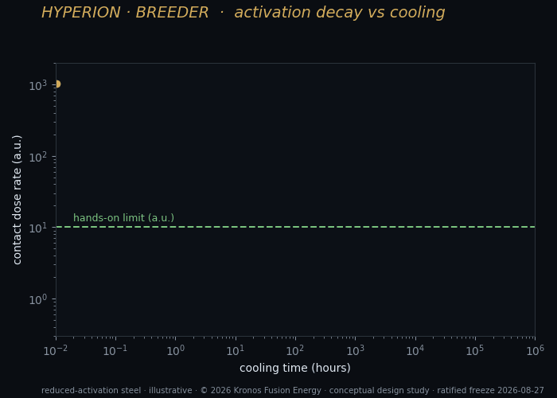
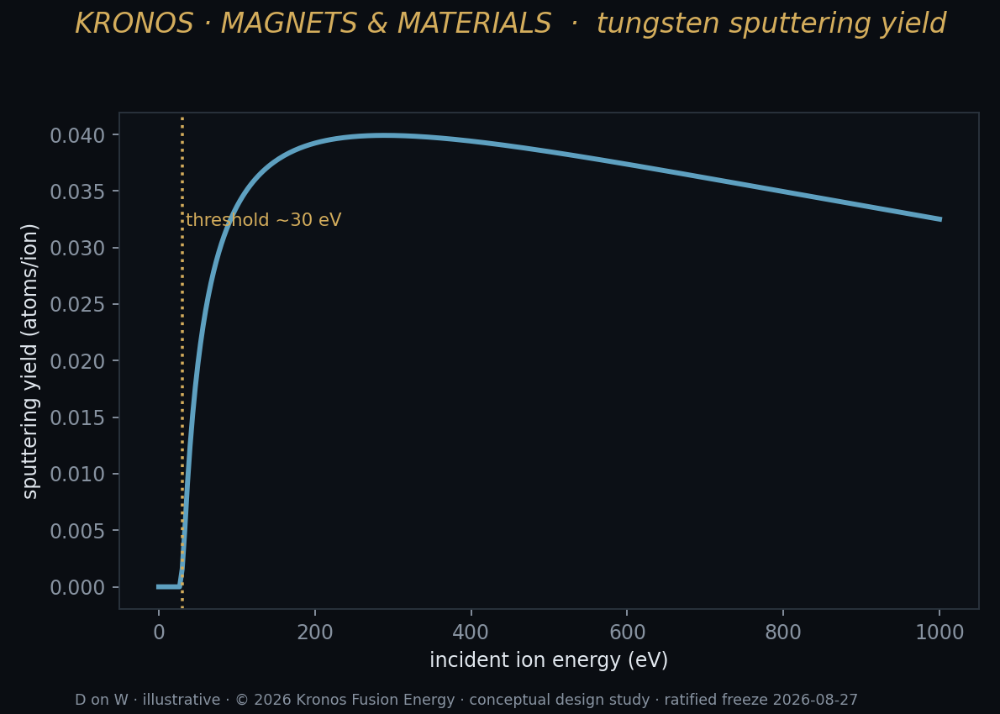
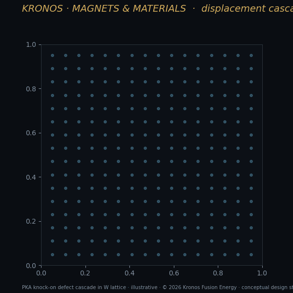

Narration in production — this player goes live when the chapter audio lands.
Wealth of the World: How Fusion Energy Could Reshape Economies
Imagine a machine no larger than a shipping container that mines the deepest vault in the universe — the nucleus of the atom — and pours out, first, materials a superpower cannot buy at any reliable price, and then a flood of firm, clean, always-on power that the grid and the thinking machines we have just built are starving for. That is the future this chapter is about. But fusion does not arrive as a single product on a single day. It arrives as a sequence, and the order is the honest order: materials before megawatts, scarcity before commodity. A fusion company that promises cheap electricity everywhere, tomorrow, is selling you the last act without the middle ones. What we are actually selling first is narrower, harder, and far more defensible — strategic materials that have no adequate domestic source, and clean power delivered to the two customers who need it most and can use it soonest. This chapter is about those markets, about how abundant, firm, clean energy could reshape the wealth of the world, and about the physics — real, shown, unforgiving — that makes the whole story possible.
Energy is the master resource
Before we touch a single coil, stand back far enough to see the whole board, because from that altitude fusion's stakes become blindingly obvious. Everything a civilization makes is, at bottom, energy given shape. A steel beam is iron ore plus the heat that smelted it. A bag of fertilizer is nitrogen wrestled out of the air by a process that runs on pressure and heat. A litre of fresh water in a desert is seawater minus the energy it took to leave the salt behind. A trained artificial-intelligence model is, quite literally, electricity reorganized into weights. Trace any physical good back far enough — peel away label after label — and you arrive at the same root input, the one that never shows up as a line item because it is folded silently into all the others: energy.
This is why the price of energy is the hidden term inside the price of everything. When energy is scarce or dear, the whole economy pays a tax it never sees itemized — in costlier steel, costlier food, costlier water, costlier computation — and that tax falls hardest on exactly the goods a growing world needs the most of. When energy is abundant, clean, and cheap, the tax evaporates, and the ceiling on every downstream good rises at once, as if a weight had been lifted off the entire species. Energy is not one sector among many jostling for attention. It is the master resource — the input to all the other inputs — and its cost sets the altitude at which an entire civilization is permitted to operate.
Read this way, the history of human wealth is nothing but a history of access to ever more concentrated energy. Muscle gave way to firewood, firewood to coal, coal to oil and gas — and each step was a leap in how much energy a single person could command from a given weight of fuel, a leap reflected, within a generation, in how much everything else a society could afford to build. We are, all of us, wealthy today in direct proportion to how much fire our ancestors learned to hold in one hand. Fusion is the next rung on that ladder, and it is not a small one. It is a discontinuity, not an increment. The energy locked in an atomic nucleus is millions of times denser than the energy locked in a chemical bond — the same jump, in reverse, that separates a matchstick from a star — and it is drawn from fuel as common as water and a gas the Moon holds in quantities the Earth never will.
That is the economic thesis of this book, stated without ornament. Fusion is not, first, a new gadget or a cleaner kind of power plant. It is a new floor under the cost of everything — a permanent reduction in the master input from which all other goods are made. The three forties this book is built around are simply that thesis rendered into numbers you can check: Q40, a fortyfold energy return, is the physics that makes the floor possible; forty dollars per megawatt-hour is the price at which the floor sits low enough to matter to every downstream good; and within forty years is the honest, deliberately unhurried horizon over which the floor gets built. Get those three right and you have not improved the energy sector. You have rewritten the arithmetic of prosperity itself.
But an economy on this scale is not declared into being by a manifesto. It has to be built, machine by machine, in the right order — and every one of those machines begins in the same improbable place.
Behind every claim in this book stands a machine, and behind every machine stands a coil of superconducting tape wound around emptiness. The magnet is not a supporting component; it is the enabling technology — the keystone on which the whole compact-fusion thesis balances, because the field the coil can hold decides the size, the cost, and the very possibility of the machine. The quiet breakthrough of the last decade was not in the physics but in the material: REBCO, a rare-earth superconducting tape that carries current at fields and temperatures the old low-temperature conductors never could. But field is not where the difficulty lives. The real limit is mechanical — the Lorentz load tries to burst the winding outward, and REBCO is a brittle ceramic that degrades once strained past roughly four-tenths of a percent, so the true design variable is strain, not field. That single honest relationship splits Kronos's two machines cleanly: the breeder's large-bore centrepost, at its frozen on-conductor working point, sits comfortably inside what its reinforcement can hold, while the burner's small-bore end-plug, which the physics drives to about 26.49 tesla at its required bore, runs past the structural limit as drawn — a quantified, published gate rather than a hidden one. The magnet is the machine; the magnet chapter shows why. For the materials story that follows, one fact carries forward: the magnet's real enemy is mechanical, and structure — the cryogenic super-alloys that reinforce the coil — is what answers it.
The materials the reactor demands
A fusion reactor is a hostile place for matter — arguably the most hostile place humanity has ever deliberately built. The structures nearest the plasma are bathed in a flux of high-energy neutrons that, over years, hammer atoms clean out of their lattice positions, swell and embrittle metals, and transmute one element into another. The magnets must survive it; the vessel must survive it; and the quiet field of materials science that supplies survivable alloys is, in truth, one of the pacing technologies of the entire fusion enterprise. Here is a hard truth the whole industry lives beneath: you can solve the plasma physics completely and still not have a power plant, because the wall behind the plasma has not been invented yet. Materials are not a footnote to fusion. They are a gate every design must pass through, and the gate is heavy.
Consider the demands laid on a single square metre of the wall that faces the plasma — a patch of metal asked to do the impossible several times over. It must tolerate heat fluxes comparable to the surface of the Sun. It must not erode into the plasma and poison it. It must hold its shape and strength while 14-MeV neutrons rearrange its atoms at a rate measured in displacements per atom per year. And it must not, under that bombardment, transmute into elements that make it swell, go brittle, or stay dangerously radioactive for centuries. No single conventional material does all of that. The alloys that come closest are the fruit of decades of deliberate metallurgy, and they define a material base every bit as strategic, in its own way, as the fuel itself.
Some of the answers are already known and merely await qualification at scale. Reduced-activation ferritic-martensitic steels — steels engineered so that the elements which would otherwise become long-lived radioactive isotopes under neutron flux are swapped out for cousins that decay quickly — are the leading structural candidate, because they let a reactor's retired components cool to hands-off levels in decades rather than millennia. Tungsten, with the highest melting point of any metal, armours the surfaces that stare directly into the plasma. And cryogenic super-alloys like MP35N — a cobalt-nickel-chromium-molybdenum alloy with a yield strength above two gigapascals at magnet temperatures — reinforce the coils, because as we have seen, the magnet's real enemy is mechanical, and structure is what answers it.
Others sit on a genuine research frontier, and this is where the story turns almost alchemical. High-entropy alloys — a class of materials made not from one dominant metal with trace additions but from several principal elements mixed in near-equal proportion — are among the most promising candidates for radiation tolerance, because their deliberately disordered lattices can, in some compositions, heal displacement damage rather than accumulate it. The very randomness of the lattice gives a knocked-out atom many nearly-equivalent places to settle back into, so the damage anneals almost as fast as it forms — a metal that mends itself under fire. They are not a solved technology, and I will not pretend they are. But they are exactly the kind of advance that a reactor-grade neutron environment both demands and, remarkably, can help create.
That last point is the hinge that swings us from the machine to the market. Because the very neutrons that damage materials are also the tool that qualifies them — you cannot certify a fusion alloy without a fusion-grade neutron source to age it in — and the isotopes that fusion needs are the isotopes fusion can make. This is where Hyperion stops being a reactor and becomes something rarer and stranger: a foundry.
Hyperion, the foundry
Let me say the honest, counter-intuitive thing first, because it inverts everything you expect a fusion company to boast about. The breeder does not sell electricity. As a power plant it is net-negative — it consumes more electricity than it produces, on the order of 79 megawatts in the red. If you judged Hyperion as a generator, you would switch it off tomorrow. But Hyperion was never sized to a wattage. It was sized to a supply need. It is a machine for conjuring three materials the United States structurally cannot source at scale, and each of those three faces a documented, worsening domestic shortage. The near-term business of fusion, in other words, is materials — not power. The revolution begins not with a light switch but with a treasury of substances the market cannot otherwise mint.
The reason these three shortages exist is worth understanding, because it is not an accident of policy that a well-funded country could simply fix next year. In each case the material is not mined or manufactured directly; it is a by-product of some other nuclear process, and the country has quietly stopped running the processes that used to throw it off. That is the structural trap, and it is airtight: you cannot scale the supply of a by-product by wanting more of it — you cannot ask a shuttered production line to throw off more of its residue simply because the residue has become priceless. You have to build a machine whose purpose, not whose exhaust, is the material. Hyperion is that machine — a deliberate source where the world has only accidental ones.
Look at Hyperion, then, not as a reactor but as an economy in miniature — a small, self-contained world with its own currency. Its three products do not sell into large markets by tonnage; they sell into small markets by criticality, where the quantity a nation needs is modest, the quantity it can actually get is smaller still, and the consequences of the gap are wildly out of proportion to the volume.
| Product | What it does | Why it is scarce | Who needs it |
|---|---|---|---|
| Helium-3 | Neutron detection; the only practical route to millikelvin cooling for quantum machines; a lung-imaging agent; seed fuel for the burner | A by-product of tritium decay in warheads; the federal auction closed in 2009 and never reopened | Border and treaty security; quantum-computing and dark-matter labs; medical imaging |
| Tritium | Boosts warhead yield; startup fuel for every deuterium–tritium fusion effort | Decays at 5.5% per year against a single aging domestic production route | The weapons stockpile; the entire fusion industry |
| 14-MeV neutron flux | Ages and qualifies reactor materials; tests chips for stray-particle upsets; makes isotopes by activation | No operating high-flux 14-MeV test facility exists anywhere on Earth | Every fusion developer; semiconductor, aerospace, and automotive makers; medicine |
The first product is helium-3, and it is the crown jewel — so much so that it earns a section of its own later in this chapter, where its three irreplaceable uses are told in full. What matters here is the economics of its scarcity. Almost all of the world's helium-3 has historically come from the decay of tritium in nuclear-weapons stockpiles — harvested, in effect, from warheads as they aged. The federal helium-3 auction that once rationed that trickle to researchers ended in 2009, and the shortage it exposed has never healed: supply cannot respond to surging demand from the quantum industry, because there is no supply mechanism left to respond, only an inventory quietly shrinking toward zero. Hyperion breaks the trap by breeding helium-3 independently of everything else in the machine — it carries no contingency on the tritium blanket's performance — which makes it the most robust product in the entire plan. Whatever else the breeder does or does not achieve, it is a helium-3 source in a market that has, essentially, none.
The second is tritium, and here the word is not "market" but "requirement." Tritium boosts the yield of the nuclear weapons in the stockpile, and it decays at 5.5 percent per year — meaning the stockpile must be continuously replenished simply to stand still. This is the cruel arithmetic of a decaying strategic material: do nothing, and the inventory erodes itself, year after year, whether or not a single weapon is ever built or fired. Against that relentless loss the country has essentially one aging domestic production route. Every deuterium-tritium fusion effort in the world also needs tritium to strike its first spark, and because tritium cannot be stockpiled indefinitely against that same decay, the whole sector is walking, eyes open, toward a startup-fuel crunch that a merchant source would relieve. Hyperion's tritium output rides on the performance of its breeding blanket — roughly 1.7 kilograms per year at the demonstrated blanket, scaling toward a national-duty target near 4 kilograms per year at an advanced one. Even at the low end, it is a domestic source where the country has, today, almost nothing to spare.
The third product is the neutron flux itself — 14-MeV neutrons, the signature energy of deuterium-tritium fusion, delivered as a test environment. No operating facility on Earth produces a fusion-relevant 14-MeV flux at scale; the dedicated facility that was supposed to was proposed and never built. Yet qualifying the structural materials of every fusion reactor — the reduced-activation steels and tungsten discussed above, the very alloys the industry's future depends on — requires exactly this flux to age them under realistic damage, a materials story consequential enough that it earns a section of its own below. The same neutrons test semiconductors for the single-event upsets that plague automotive, aerospace, and AI hardware — as transistors shrink toward the scale of a virus, a single stray neutron can now flip a bit and crash a system, and chips must be certified against it. And they produce medical and industrial isotopes by activation. A high-flux 14-MeV source is a service the market has no way to buy today, at any price.
Three materials, three structural shortages, one machine. That is the foundry, and it is the business fusion can be in before it ever sells a single firm electron. It has one more quiet virtue that changes everything: its customers already exist. The buyers of helium-3, tritium, and neutron-irradiation services are national-security agencies, quantum-hardware makers, and materials programs who are short of these things now, at whatever price, and who do not need fusion to first win a war of pennies against the cheapest electron on the grid. Selling into a structural shortage is a fundamentally easier first business than selling into the most competitive commodity market on Earth. That is not a detail of the plan. It is the reason the plan begins with materials at all.
The medicine in the flux
There is a quieter market that belongs on that table too, one measured not in national security but in human lives, and it runs on the very same physics: the isotopes that diagnose and treat disease. Most people have no idea that a great deal of modern medicine depends on a supply chain of radioactive atoms that must be manufactured hours or days before use, inside a nuclear machine — and that this supply chain is among the most fragile in all of healthcare, a lifeline strung on a handful of aging reactors half a world away.
Begin with diagnosis. The single most-used radioactive substance in medicine is technetium-99m, the tracer behind the majority of the world's diagnostic nuclear-medicine scans — the bone scans that catch a cancer's spread, the perfusion scans that reveal whether heart muscle is starved of blood, the studies that map a failing kidney or a diseased thyroid. Technetium-99m is almost perfectly suited to the task: it emits a clean gamma ray a camera can see and then vanishes, half of it gone in about six hours, sparing the patient a lingering dose. But that same mercy is a supply nightmare. You cannot stockpile a substance that halves every six hours. It has to arrive fresh, continuously, forever. Hospitals do not buy technetium-99m at all; they buy its parent, molybdenum-99, which itself half-lives away in about sixty-six hours, and they milk the technetium from it at the bedside, like drawing cups from a spring that is quietly draining even as it fills. The whole edifice — millions of scans a year — rests on a continuous, just-in-time production of an isotope that cannot wait. And for decades that production has hung on a mere handful of research reactors, most of them older than the doctors who depend on them. When one goes down for repairs, the others cannot cover the gap, and the shortfall is felt in clinics as rationed scans and postponed diagnoses. A continuously running, domestic neutron source is exactly the resilience this supply chain has never had.
If diagnosis is the established market, therapy is the exploding one, and here the story turns genuinely revolutionary. The newest front in oncology is targeted radionuclide therapy: chemically bolting a radioactive atom onto a molecule engineered to seek out a tumour and lodge there, so that the radiation is delivered from the inside, cell by cell, while healthy tissue is largely spared. It is the closest thing yet to the century-old dream of a magic bullet. The beta-emitters that pioneered it — iodine-131 for the thyroid, lutetium-177 for certain prostate and neuroendocrine cancers — are neutron products. And the frontier beyond them, the alpha-emitters like actinium-225, deliver their destruction over just a few cell diameters, ferocious and exquisitely local — and they are so scarce that the entire planet's supply has been reckoned in grams, throttling the very clinical trials that could prove them.
Here fusion's neutrons are not merely another source; they are a different kind of source, and the difference is fundamental. A fission reactor floods its targets with slow, thermal neutrons, which mostly do one thing: stick to a nucleus and make it heavier. A 14-MeV fusion neutron carries so much energy that it can knock pieces out — driving reactions written (n,2n), (n,p), and (n,α), in which the struck nucleus spits out a neutron, a proton, or an alpha particle and becomes an isotope that thermal neutrons simply cannot reach. These threshold reactions open a whole second catalogue of isotopes — often the neutron-deficient, high-purity variants that make the finest medical tracers, produced without the mountain of radioactive waste that irradiating uranium leaves behind. A fusion neutron source and a fission reactor are not rivals for the same isotopes; they are complementary halves of the periodic table's therapeutic potential. Hyperion, running its 14-MeV flux as an ordinary consequence of doing its job, would be one of the very few places on Earth able to make the fast-neutron half at all.
The elegance goes further still. Because fast neutrons can reach both a nucleus and its near neighbours, they can supply matched pairs — a diagnostic isotope and a therapeutic one of the very same element, chemically identical, so that a physician can image exactly where a treatment will go before delivering it, and then watch it work. Copper offers one such pair: a lighter copper isotope that emits the positrons a PET scanner sees, and a heavier one that emits the electrons that kill, both within reach of neutron reactions and awkward or impossible to make cleanly any other way. This is the theranostic principle — see it, then treat it, with the same targeting molecule — and it is reshaping oncology around the idea that the scan and the cure should be two faces of a single atom.
The wider foundry
The foundry's reach does not stop at the hospital door. Step into almost any advanced industry and you will find a neutron-made isotope doing invisible, load-bearing work. The cobalt-60 that sterilises the majority of the world's disposable medical equipment — syringes, surgical gowns, implants — is nothing but ordinary cobalt-59 that sat in a neutron flux until it captured an extra neutron; the same isotope preserves food against spoilage and inspects welds, castings, and pipelines for the hidden flaws that a camera could never see. It, too, decays — a little over five percent a year — so it, too, must be continuously remade, a strategic consumable dressed as a commodity.
Consider one especially elegant example, because it shows how deep the dependence runs. The high-power semiconductors at the heart of every electric car, every wind turbine's converter, every high-voltage transmission link are cut from silicon that has been doped to a uniformity no chemical process can match — by neutrons. Bathe a pure silicon crystal in a neutron flux and a small, precisely known fraction of its silicon-30 atoms transmute into phosphorus, salting the crystal with exactly the evenly distributed impurity that makes it a superb power conductor. It is called neutron transmutation doping, and there is simply no other route to that perfection of evenness. The machines that will electrify civilisation are, in a real sense, finished inside a reactor.
And then there is the application that closes a loop with the compute economy this chapter keeps circling back to: testing the chips themselves. As transistors have shrunk toward the size of a virus, they have grown so delicate that a single stray neutron — one of the shower that rains down ceaselessly from cosmic rays striking the upper atmosphere — can deposit enough charge to flip a bit, silently corrupting a calculation. Engineers call it a single-event upset, and in a car's self-driving computer, an aircraft's avionics, or a data centre training a frontier model across a hundred thousand processors, a silent bit-flip is not a nuisance but a hazard. The only way to certify a chip against it is to age it, fast, under an accelerated neutron beam — and a 14-MeV source delivers in an afternoon the dose a chip would meet over years in the field. The same neutrons that will one day certify fusion's own armour are the neutrons that harden the mind of the machine age against the sky.
The three lives of helium-3
I have called helium-3 the crown jewel of the foundry and described the markets that make it so. It is worth turning the gem over once more to see, in physical detail, why nothing else can stand in for it — because a substance is only truly strategic when it has no substitute, and helium-3 has, remarkably, three separate lives in which it has none at all.
Its first life is as a catcher of neutrons. The helium-3 nucleus has one of the largest appetites for a slow neutron of any nucleus known: a neutron that wanders into it is swallowed, and the nucleus promptly splits the difference into a proton and a tritium nucleus, whose recoil the detector reads as an unmistakable electrical pulse. What makes helium-3 supreme for this work is not merely the size of the appetite but its discrimination — it is nearly blind to the gamma rays that swamp lesser detectors, so it can pick a single genuine neutron, the fingerprint of fissile material, out of a roaring background. When the federal auction that once fed helium-3 to researchers closed in 2009, a frantic search for substitutes followed, through boron and lithium and coated films; none matched it, and the failure of that search was itself the clearest possible proof of how singular the gas is.
Its second life is as the maker of cold — the deepest, most useful cold in the universe. Ordinary refrigeration runs out of room far above the temperatures that superconductors and quantum devices demand; to reach the last thousandths of a degree above absolute zero you need a trick, and the trick has only one working substance. Mix helium-3 into liquid helium-4 and, even at absolute zero, the helium-4 will keep about six percent of the helium-3 dissolved in it and refuse to let the rest go. Coax helium-3 atoms across that stubborn boundary — from the concentrated liquid into the dilute — and each crossing drinks heat from its surroundings, exactly as a drop of water cools your skin by evaporating, except that this evaporation never stops working, all the way down to a few thousandths of a degree. That is a dilution refrigerator, and it is the floor on which the entire quantum-hardware industry stands. Every superconducting qubit ever cooled, every dark-matter detector waiting in its deep mine, sits at the bottom of a fountain of circulating helium-3. As the world pours capital into quantum machines, it is pouring it, indirectly, into demand for a gas the Earth barely has.
Its third life is as a sensor and a lantern. Spin-align the nuclei of helium-3 with laser light — hyperpolarise it — and a patient can breathe it in to light up the living, moving air spaces of the lung on an MRI scanner, revealing function where ordinary imaging shows only structure, catching disease in the very act of stealing breath. The same polarised gas filters and analyses beams of neutrons for the materials scientists who probe matter with them. In each of its three lives — catching neutrons, making cold, sensing the unseen — helium-3 is not merely the best option. It is the only one. And it is the product Hyperion breeds most robustly of all, on a path that carries no contingency on the tritium blanket, which is why, of everything in the plan, it is the surest.
Proving matter under fire



Return now to the third product — the neutron flux itself — because it conceals the most consequential materials story in the whole book, and it is a story told entirely in receipts.
Earlier I said that qualifying a fusion material requires a fusion-grade neutron source to age it in, and that this traps the field inside a circle: you need fusion neutrons to certify the materials you need to build the machine that makes fusion neutrons. It is worth showing exactly why an ordinary fission reactor — of which the world has hundreds — cannot simply stand in and break that circle. The answer is one of the most important numbers in all of fusion materials science, and almost nobody outside the field has ever heard of it.
When a fast neutron strikes the metal of a reactor wall, it does two different kinds of harm. The first is blunt: it knocks atoms clean out of their lattice positions, and the accumulated damage is counted in displacements per atom — dpa — with a fusion first wall enduring tens of dpa in a single year of service, each atom in the metal booted from its home ten or twenty times over. A fission reactor can, with effort, reproduce that displacement rate. But the second kind of harm is the one that actually kills, and it is the one fission cannot fake. A 14-MeV fusion neutron carries enough energy to trigger threshold reactions — (n,α) and (n,p) — that transmute the metal's own atoms into helium and hydrogen gas, seeded atom by atom deep inside the solid. The helium is the assassin: it cannot dissolve, so it creeps to the boundaries between grains and gathers into bubbles that swell the metal and rob it of its toughness, until a component that looked sound turns brittle from within, like timber that has quietly gone to rot.
The decisive quantity is the ratio of that gas production to the displacement damage — the helium atoms produced per dpa — and it is where fission and fusion part ways completely:
He/dpa ≈ 10 (14-MeV fusion) vs. < 1 (fission)
Roughly ten atoms of helium for every displacement in a fusion first wall, against a fraction of one in a fission reactor. A material aged in a fission reactor can accumulate all the displacement damage you like and still never meet the helium that will actually destroy it in service. It walks out of the test looking qualified and fails in the machine. This single ratio is why the dedicated 14-MeV test facility the field has needed for decades was proposed again and again — and never built, leaving the circle unbroken and the whole industry building on inference. Every fusion reactor humanity constructs after Hyperion — the reduced-activation steels, the tungsten armour, the self-healing high-entropy alloys of an earlier section — must have its materials proven under a flux that reproduces that ratio, or it is building on faith. A breeder that throws off a usable 14-MeV flux as the ordinary exhaust of its operation does not merely make a product. It builds the qualification infrastructure of an entire industry that does not yet exist, and it does so in the open, for competitors and collaborators alike. That is what it means to be a foundry rather than a factory: you do not only make the goods, you forge the very standards by which everyone's goods are proven.
You cannot certify a fusion material anywhere but inside a fusion neutron flux — which is exactly why the machine that makes the flux has to come first.
Two machines, opposite on neutrons
Stand back from all three products and a deeper design logic swims into focus — one that explains, at the level of raw physics, why this company builds two machines instead of one, and why materials must come before megawatts rather than the other way round.
The two machines are optimised in opposite directions along the single axis that matters most: neutrons. The breeder is deliberately, luxuriously neutron-rich. It runs the deuterium–tritium reaction precisely because that reaction is the most prolific neutron source chemistry allows, and then it wraps itself in a blanket engineered to catch and multiply those neutrons rather than squander them. The measure of that blanket is its tritium breeding ratio, and Hyperion's design holds its breeding lever deliberately just above replacement — 1.03–1.20 across the frozen recipes — meaning that for every tritium nucleus the plasma burns, the mature blanket breeds nearly two. One of the pair replaces the fuel just consumed; the surplus, the extra eight-tenths, walks out of the machine as product. The physics of it is a small marvel: a neutron entering the blanket strikes lithium-6 and cleaves it into a tritium nucleus and a helium nucleus, giving up energy as it goes, while fast neutrons striking a multiplier — beryllium or lead — shatter into two, so that the blanket sends out more neutrons than it took in. A TBR above one is what makes a machine a breeder at all; a TBR near 1.8 is what makes it a merchant.
Every neutron is an asset, and the breeder is built to spend none of them.
The burner is the mirror image, and deliberately so. Its whole value — the reason it can sit inside a data centre or a defended base, close to people, running for years — is that it is neutron-poor. It burns deuterium and helium-3, a reaction whose principal channel throws off charged particles that can be caught and turned straight into electricity, and it holds its neutron leakage to a low-neutron fraction of only about 5.44 percent of its fusion power. That number is the burner's licence to live among us: it is why a compact shield suffices, why the magnets endure for years, why the machine can be firm clean power rather than a radiological fortress kept behind a fence. But that same cleanliness is exactly why the burner cannot be the foundry. A machine that spends almost no neutrons cannot breed materials from them; you cannot ask the clean generator to double as the isotope mint. The two functions are physically opposed, and no single machine can be excellent at both.
That opposition is the honest, unspun reason the plan is staged the way it is. It is not a marketing sequence chosen to manage expectations. It is written into the reactions themselves. The neutron-rich breeder is the natural foundry, and it is net-negative on power by design — roughly seventy-nine megawatts in the red — so it could never earn its keep selling electricity even if you demanded that of it; its living is materials, and materials are precisely what a neutron-rich machine is superb at making. The neutron-poor burner is the natural generator, and it earns from firm power, which is precisely what a clean machine is superb at delivering. Make fuel and materials first, then electricity, and you are not deferring the good part or hiding a weakness behind a schedule. You are letting each machine do the one thing its physics makes it magnificent at, in the order the physics itself demands. A plan that promised cheap fusion electricity first would be a plan fighting its own reactions the whole way. This one runs downhill with them.
Firm power is the product
Now the second act, and the grander one. When the breeder has done its work — proving the fuel cycle, seeding the first helium-3 — the burner takes the stage, and the burner sells the thing this book has promised from its very first page: firm, clean, enormous power. This is the act where fusion stops making the tools of the future and starts powering it.
The word that carries all the weight is firm. It is an unglamorous word, and it is the entire value proposition. Firm power is power that is there the instant you ask for it — day or night, calm or gale, high summer or the deepest cold of a winter grid emergency. It is the opposite of intermittent. To see why this distinction is not a quibble but a chasm, you have to separate two things that everyday language carelessly runs together: energy and capacity. Energy is how many kilowatt-hours a source produces over a year. Capacity is whether the source can be counted on to deliver power at the specific hour you actually need it. Solar and wind are extraordinary producers of energy — their electrons are abundant and gloriously cheap — but they contribute very little firm capacity, because the one thing they cannot promise is a particular megawatt at a particular moment of the utility's choosing. The sun sets on schedule; the wind does not blow on request. Nature keeps her own timetable, and the grid cannot.
That gap has a shape, and grid engineers have watched it deepen for years. As more solar comes online, the middle of a sunny day floods with cheap power and the real challenge migrates to the evening, when the sun drops away just as demand peaks and the whole system must ramp up conventional supply in a matter of hours. Worse are the long stretches — sometimes days on end, most punishing in winter — when a windless, sunless spell settles over an entire region at once and the renewable fleet, however vast, produces almost nothing exactly when heating demand is highest. Those hours are not an edge case to be waved away. They are the design case — the hours the whole system must be built to survive. And they are why the intuitive fix — "just add batteries" — only carries you so far. Storage is superb at shifting energy across hours; it is what smooths the evening ramp. It is poorly suited, at the scale that matters, to carrying a grid across a multi-day windless freeze, because that is not a shifting problem but a duration problem, and building enough storage to ride out the worst week of the year means building a colossal asset that sits idle the other fifty-one. A power system built on intermittent sources alone must therefore do one of two ruinously expensive things: overbuild generation by enormous multiples so that even a bad day produces enough, or hoard vast reserves of storage and backup for the hours the weather goes quiet. Either way, the binding scarcity on a modern grid is not energy. It is firmness — power you can count on — and the value of a megawatt that is always there is categorically different from the value of one that is there only sometimes.
Two customers feel that difference most sharply, and they are the burner's first two markets.
The first is the data center — the housing we call MetroVolt. Artificial intelligence has become an appetite unlike anything the grid was ever built to feed, and it is an appetite with zero tolerance for intermittency. A training run does not pause politely for a cloudy afternoon; a cluster of hundreds of thousands of processors, drawing power measured in the output of a full conventional power station, must be fed every single second or the run is corrupted and the investment incinerated. And the industry has bound itself to a second promise that intermittency simply cannot keep: that this power be clean, around the clock, not merely offset on paper by renewable energy generated at some other hour in some other place. Twenty-four-hour carbon-free power, delivered dense enough to sit shoulder to shoulder with the load rather than be dragged across a congested grid, is precisely what an intermittent source cannot provide and precisely what a fusion burner can. That is why the customers for firm clean power are, for the first time in the history of this field, already in the room and already short of electrons — building, today, dedicated generation next to their computers because the grid cannot connect them fast enough. The future has arrived at their door with an invoice, and they are ready to pay it.
The second is defense — the housing we call Aegis. A fixed military installation values firm on-site power more fiercely than almost any customer alive, because its alternative is a fuel convoy or a vulnerable grid connection, and both are liabilities measured in more than money. A grid tie can be severed by a storm, a cyberattack, or an adversary who has studied exactly where the lines run; a fuel convoy is a target on a road, paid for in the one currency a military can never replace. Power that is generated on-site, runs for years without resupply, and can island itself — carry the base entirely on its own the moment the outside grid goes dark — is not a convenience for a defense site. It is a survivability requirement, and survivability has no ceiling on its price. A generator that runs clean, runs quiet on neutrons, and runs without a supply line is worth whatever resilience is worth, which is to say a very great deal. The burner's plug is deliberately low-neutron by design: its deuterium-helium-3 reaction produces a first-wall neutron load of only about 0.03 megawatts per square metre, and a compact 30-centimetre shield of layered tungsten and borated polyethylene clears a multi-year coil life. That low-neutron character is what lets the same machine live at a fixed site, close to people, for years on end.
Both housings — Aegis for defense, MetroVolt for data centers — are the same deuterium-helium-3 generator. That is the quiet elegance of the plan: one machine, two markets, distinguished only by where it sits and whom it serves. And it is here that the burner reaches for the price line this book is named around — the second of the three forties, the price at which firm fusion power stops being a premium and becomes the grid's obvious default. Getting there for the mass market depends on cheap fuel, and that in turn is why the plan reaches, around 2040, for lunar helium-3: a burner fleet at scale cannot self-breed all the helium-3 it burns, and the Moon's regolith, salted over billions of years by the ceaseless drizzle of the solar wind, holds it in quantities the Earth simply does not. We will, in the fullest sense of the phrase, fuel civilization from the Moon. The defense market, valuing resilience over raw price, does not have to wait for that. It is the burner's first firm ground — the customer who will pay for firmness itself, before firmness has learned to be cheap.
The economics of firmness
I have said that firmness is the burner's whole value proposition. It is worth making the economic case for that claim carefully, because it runs headlong against a widespread and comfortable intuition — that once solar and wind are cheap enough, the rest is a matter of sprinkling in a little storage and the problem solves itself. The physics of a grid says otherwise, and the economics follow the physics like a shadow.
Begin, again, with the distinction between energy and capacity, because almost every confused argument about the grid is born from collapsing the two. Energy is how many megawatt-hours a source delivers over a year. Capacity is whether it can be relied upon to deliver a specific megawatt at a specific hour that the system does not get to choose. Solar and wind are superb producers of energy and poor providers of firm capacity, because the one thing they cannot promise is output on demand. A grid, though, is not paid to produce energy on average. It is obligated to match supply to demand every second — including the second on the worst evening of the worst week of the year, when a whole region shivers in the dark. Its true product is not energy. It is reliability, and reliability is precisely what an intermittent source cannot sell.
This has a sharp consequence that deepens, rather than eases, as renewables grow — a consequence that surprises almost everyone the first time they meet it. The first solar farm on a grid is enormously valuable: it displaces expensive fuel at exactly the sunny hours it produces. The hundredth solar farm on the same grid is worth far less, because by then sunny-hour power is abundant and nearly free, and the new farm produces nothing during the hours that have become scarce — the dark, still, high-demand evenings. This is value deflation, and it is not a flaw in any particular project; it is structural, woven into the physics of a source that produces on nature's schedule. The more intermittent capacity a grid adds, the less each additional increment is worth, because they all produce at the same times and all fall silent at the same times, like a choir that can only sing in unison. Cheap energy delivered at the wrong hour has little value, and no amount of it ever adds up to reliability.
The economics of firmness run the other way entirely. A source that can be dispatched — that delivers its rated power whenever the system asks, through the evening ramp, through the multi-day windless freeze that is the real design case for a winter grid — does not suffer value deflation. Its worth, if anything, rises as intermittent penetration grows, because the scarce commodity on a heavily renewable grid is not another sunny-afternoon electron but a guaranteed one at six o'clock on a January evening. Storage helps at the margin: it is excellent at shifting energy across hours and smoothing the evening ramp. It is poorly suited, at the scale that matters, to carrying a grid across a week-long weather drought, because that is a duration problem, not a shifting problem, and sizing storage for the worst week means building a colossal asset that dozes idle the rest of the year. A grid built on intermittency alone must therefore do one of two expensive things forever: overbuild generation by large multiples so that even a bad day suffices, or hold vast reserves of storage and backup for the hours the weather goes quiet. Either way, the binding scarcity is not energy. It is firmness.
| Intermittent (solar / wind) | Firm fusion (the burner) | |
|---|---|---|
| Delivers on demand | No — weather-dependent | Yes — dispatchable |
| Value as penetration rises | Falls (value deflation) | Holds or rises |
| Covers a multi-day weather drought | Only with vast storage | Inherently |
| Can sit beside the load | Land-limited, sited by resource | Compact, sited by the customer |
| The product it actually sells | Energy | Reliability |
This is the economic bedrock the burner stands on, and it is why its price target — the second of the three forties, forty dollars per megawatt-hour — is a target for a firm electron, not an intermittent one. A firm clean megawatt and an intermittent clean megawatt are not the same product sold at two different prices; they are different products, and the firm one is the scarce, appreciating asset on the grid the world is actually building. Fusion does not have to beat solar at producing cheap sunny-afternoon energy — and it will not try. It has to provide the thing solar structurally cannot — power you can count on, clean, at the hour of your choosing — and to do it at a price the grid will treat as its default rather than its insurance policy. Win that, and firm fusion power becomes not a luxury the grid tolerates but the spine it is built around.
Energy is water
Nowhere is the master-resource principle more literal, or more consequential for human life, than in fresh water. Separating salt from seawater is, in the end, an energy problem and almost nothing else. Thermodynamics sets a floor — the minimum work to desalinate seawater is small but real, a little under a kilowatt-hour per cubic metre — and every real plant pays several times that floor to overcome the stubborn inefficiencies of actual membranes and pumps. Which means the price of fresh water from the sea is, to first order, the price of energy, marked up. Cheap firm energy is cheap water; expensive energy is a water crisis. The two are the same problem wearing different clothes, and to solve one is to solve the other.
Desalination also happens to crave exactly the kind of power fusion provides. It is a steady, around-the-clock industrial process that runs best on baseload; it does not want to sprint when the sun is out and stall when a cloud drifts past. A firm clean source running day and night is a near-perfect match, and a fusion plant offers two ways to serve it — high-grade heat to drive thermal desalination directly, or firm electricity to run reverse-osmosis membranes — where an intermittent source would force the plant to idle its expensive capital every time the weather turned.
Follow that thread and it runs straight into the deepest scarcity of the coming century. Fresh water is the constraint on food, and food is the constraint on stability itself. Water-stressed regions are where crops fail, where cities strain to the breaking point, and where the sharpest conflicts over a shared river or a falling aquifer are already being fought with words today and may be fought with more tomorrow. Abundant firm clean energy does not merely make desalination affordable; it makes it possible to turn arid coastlines fertile, to irrigate land that has never in history grown anything, to lift the water constraint clean off agriculture where it presses hardest. An earlier version of this book imagined fusion converting arid landscapes into green terrain, and stripped of the romance the mechanism is exactly this: energy is water, water is food, and a permanent drop in the cost of energy loosens all three at once, like a single key turning three locks. This is what "the wealth of the world" means at ground level — not an abstraction on a balance sheet, but a river where there was a desert, and bread where there was famine.
The compute economy
Artificial intelligence has become an appetite the grid was never built to feed. Here is the economic version of that claim, and it marks a genuine turning point in the history of technology: for the first time, the binding constraint on how much intelligence a society can build is not the chips and not the algorithms. It is the power to run them. A frontier training cluster now draws electricity measured in the output of a full conventional power station, continuously, for months, and the industry's own roadmaps are increasingly gated not by how many processors it can buy but by how many megawatts it can plug in. Compute has become, in a phrase almost too literal to be metaphor, a machine for turning energy into cognition — and the exchange rate between the two is set by the price and availability of firm power. Whoever commands firm power commands the pace of the intelligence explosion itself.
That is why the data-center housing of the burner — MetroVolt — is not a speculative future market but a customer already standing in the room, and already short. The industry has bound itself to two promises that intermittency cannot keep: that the power be there every second, because a training run corrupted by a single dropout is a ruinous waste, and that it be clean around the clock, not merely offset on paper by renewable energy made at some other hour in some other place. Firm, clean, twenty-four-hour power, delivered dense enough to sit beside the load rather than be hauled across a congested grid, is exactly what an intermittent source cannot provide and exactly what a fusion burner can. And our own work here is not hypothetical hand-waving: the control system that runs the plasma was built in partnership with NVIDIA, through its Inception program — so the same company whose processors define the appetite is a partner in building a machine that could one day feed it. The circle of the compute economy is beginning, quite literally, to close.
And then the loop closes in a way that is almost too neat to be believed, except that it is true. The compute economy has two halves — the classical machines that train today's models, and the quantum machines much of the world is betting on next — and fusion feeds both from the same foundry. The classical half hungers for firm power, which the burner sells. The quantum half hungers for millikelvin cold, which only a helium-3 dilution refrigerator can deliver, and helium-3 is the breeder's primary product. The same two machines that anchor this chapter — breeder and burner — turn out to supply the two scarcest inputs of the entire information economy: the power that trains intelligence, and the cold that might one day compute it in an altogether new way. It is a symmetry so clean it feels designed, and it emerged simply from following the physics honestly.
I will keep one honesty here that this book keeps everywhere, because the contrast between wonder and receipt is the whole point of it. The quantum half of that loop is real as a cooling problem and speculative as a computing advantage. As I discuss elsewhere, there is no near-term, decade-scale quantum-computing advantage in sight for our own work; the genuine near-term quantum payoff is in sensing — the exquisitely precise diagnostics that watch the plasma — not in computation. What is not speculative is the helium-3. Whatever the quantum-computing industry ultimately delivers, and however long it takes, it will run cold on a gas the world is short of and the breeder can make. The demand for the cold is bankable even where the demand for the computation is still a bet.
The industrial dividend
Push the master-resource principle through heavy industry and it stops being an abstraction and starts weighing in tonnes. Steel, cement, aluminium, glass, ammonia for fertilizer, the base chemicals from which most manufactured things descend — these are the congealed-energy goods, the ones whose cost is dominated by the sheer quantity of energy poured into making them. A great deal of that energy, moreover, is not electricity but heat, and high-grade heat at that: the furnaces of primary steel and cement roar at temperatures electricity has always been an expensive way to reach. This is why heavy industry has been the hardest, most stubborn corner of the economy to decarbonize. It is not waiting for a cleaner electron so much as for a cleaner, cheaper source of intense, reliable, blast-furnace heat.
A fusion plant is, before it is anything else, exactly that — an enormous, steady flow of high-grade heat, which can be drawn off as heat or converted to power as the customer requires. Cheap firm clean energy in that form is what finally makes the hard-to-abate industries abatable: it decarbonizes the furnaces, it splits hydrogen from water by electrolysis at a cost the master-resource principle sets, it powers the synthesis of clean fuels for the ships and planes that cannot carry batteries across an ocean, and it turns direct capture of carbon from the air — today an energy-starved curiosity, because the thermodynamics demand so much energy per tonne removed — into something a civilization can actually afford to do at planetary scale. Each of those is, at root, a single bet: that energy will become cheap, firm, and clean. Fusion is that bet paying off.
There is a geography to this dividend as well, and it redraws the map. Energy-intensive manufacturing has always migrated toward cheap power the way water runs downhill; whole industries have picked up and crossed oceans for a fraction of a cent on the kilowatt-hour. A compact, firm, clean source that can be sited by the customer rather than by the accident of where a river falls or the sun happens to shine changes that ancient logic. It lets a nation put heavy industry wherever it chooses — beside the load, inside its own borders, on power no supply line can sever — and it makes reshoring the energy-hungry backbone of the industrial base a matter of engineering rather than geology. That is the industrial half of what "reshape economies" means: not merely cheaper goods, but the freedom to make them at home, on your own terms.
The geopolitics of abundance
It is traditional, at this point in any fusion argument, to promise that limitless clean energy will dissolve the geopolitics of oil and gas overnight and usher in a serene age of energy peace. Half of that is true, and — as so often in this book — the honest half is more interesting than the promise. Fusion genuinely does erode the strategic weight of hydrocarbon reserves. A nation that can make firm power from water and a lunar gas is no longer held hostage by whoever happens to sit atop the oil, and nations that today import their energy — and import, bundled invisibly with it, a permanent vulnerability — can trade that dependence for something much closer to true autonomy. The strategic map drawn around pipelines and shipping lanes for a century really does begin to fade.
But energy abundance does not abolish scarcity. It relocates it. The dependencies move upstream, from the fuel to the things that make the machine that makes the power. The high-temperature superconducting tape at the heart of every coil; the rare-earth elements woven into it; the reduced-activation steels and tungsten that armour the vessel; the tritium to start a deuterium–tritium plant and the helium-3 to run a burner fleet at scale — these become the new strategic materials, and whoever can make them, or cannot, inherits the leverage that oil once conferred. This is not cause for pessimism. It is cause for clarity, and it is precisely the map this chapter has been drawing from its first section. The materials-first strategy is, seen from a national altitude, a deliberate strategy for owning the upstream of the new energy order rather than renting it from someone else.
That is what makes the phrase American energy company something meant literally rather than decoratively. The breeder, Hyperion, makes the strategic materials the country structurally cannot otherwise source — the tritium it has almost no domestic slack in, the helium-3 it has rationed since 2009, the neutron flux no facility on its soil can supply. The burner, in its Aegis and MetroVolt housings, is domestic firm clean power delivered to domestic defense sites and domestic computing infrastructure, on machines that no convoy and no severed line can starve. The products are not merely energy and materials. They are energy security and materials security — the two forms of independence a serious nation cannot buy from abroad without also buying the standing risk that it will one day be denied.
A last word on who holds this, because it bears directly on what "wealth of the world" is finally meant to mean. Fusion is a multi-decade endeavour, and it needs an owner who can think in decades rather than quarters — which is why Kronos is a family-owned American company built to hold a horizon longer than any quarterly clock would ever permit. And the wealth, when it comes, is aimed past the family: the company's profits are pledged to the care of elephants, through The Elephant Sanctuary in Tennessee. That is not a marketing flourish tacked on at the end. It is a statement about what lowering the cost of everything is ultimately for — that the point of all this fire is not to pile up wealth, but to spend it on the things, and the creatures, that cannot pay for themselves.
The staged market: order as strategy
Everything in this chapter has quietly assumed an order, and the order is itself the strategy — not a schedule imposed on the business from outside but the business's central economic idea, its whole intelligence. Restated as a single rule: never ask the hardest market to pay for the least-proven machine.
The hardest market is electricity. It is the largest, the most competitive, and the most unforgiving commodity market on Earth — one where the product is utterly undifferentiated and the buyer chooses on price and nothing else. To walk into that arena first, brandishing the earliest and least-proven hardware, and try to win on cost against the cheapest electron the grid can find, is to attempt the single most difficult sale in the world as your opening move. That is, more or less, the exact sale fusion has been promising and failing to make for fifty years — the recurring tragedy of the field, repeated by hopeful company after hopeful company.
So the plan does the opposite, deliberately and from the first day. It sells first into the markets where price is not the axis of competition at all — the strategic-materials shortages, where the buyer is already short at any price and the alternative is simply doing without. That first business earns from a structural scarcity rather than a price war, and in earning it, it accomplishes something no pitch deck ever could: it matures the magnets under real load, qualifies the materials in a real neutron flux, proves the fuel cycle, and breeds the first helium-3 the burner will later need. The near-term materials business, in other words, funds and de-risks the long-term energy business. Two clocks run at once — a fast one that earns now from scarcity, and a slow one that builds patiently toward the firm-power future — and the fast clock buys exactly the patience the slow one requires. It is a plan that pays for its own future as it goes.
Only then does the burner enter the power market, and even there it enters in strict order of who values firmness most. The defense customer comes first, because a fixed installation prizes resilient on-site power above almost any price — its alternative is a vulnerable grid tie or a fuel convoy, both liabilities measured in more than money. The broad commercial grid, where price finally does rule, comes last, once cheap lunar helium-3 has brought the burner down to the forty-dollar line and firm fusion power can stop being a premium and become the default. Materials first, then firm power, then firm cheap power — each stage selling into a market that will gladly have it, each stage funding the next, and the great price war saved for the exact moment the machine is finally ready to win it.
The order of things
Step back one last time and the shape of the new energy economy stands clear in the timeline — and the timeline is deliberately, almost stubbornly, conservative. The design is closed and published now, in 2026, in the open, for anyone on Earth to check. Breeder construction begins in 2027. First tritium arrives around 2030. A first roughly-100-megawatt test burner follows near 2032, a commercial burner fleet on the order of a gigawatt through the mid-2030s, and lunar helium-3 around 2040 to feed it at scale. Materials first; then firm power; then firm cheap power. Each step earns the next, and each is chosen to be beaten rather than missed. This is not a promise dressed as a forecast. It is a ladder, and every rung is nailed down before we climb it.
The logic of that sequence is not merely tidy — it is how you de-risk a civilization-scale endeavour honestly. You do not ask the hardest market to pay for the earliest, least-proven machine. The breeder sells into shortages that exist regardless of price, to buyers already waiting at the door, and in doing so it proves the fuel cycle, matures the magnets and the materials, and seeds the helium-3 the burner will first burn. Only then does the burner sell firm power, and it sells first to the customer — defense — who values resilience above cost, before it turns at last to the broader grid where price is everything. Cheap, universal fusion electricity is the last station on the line, not the first, and any honest map of this field has to draw it that way. Selling the ending first is precisely how fusion has disappointed for fifty years. Earning it in order is how it finally stops disappointing.
There is a national logic threaded through all of it. Hyperion breeds the materials the country cannot otherwise get, breaking a by-product trap that no amount of ordinary industrial effort can escape. Aegis and MetroVolt are American firm, clean power delivered to American defense sites and American computing infrastructure. The products are not just energy and materials — they are energy and materials security, which is why calling Kronos an American energy company is meant literally, not decoratively. This is a family-owned company built to think in decades, because fusion is a multi-decade endeavour and the long horizon is the whole point.
The magnet makes the machine. The machine makes the materials. The materials seed the fuel. The fuel powers the mind we have just invented and the installations that keep a country safe. And every link in that chain, we have tried to forge in full view — including the one link, the small-bore burner plug, that does not yet close, and which we have quantified rather than hidden. That is the method: dazzle with the vision, then show the number, name the gate, and keep walking. The revolution in materials and the revolution in energy are not two revolutions. They are one revolution, told in the right order — and it is the revolution that decides the altitude at which the coming century gets to live.
Materials first, then firm power, then firm cheap power — each step earning the next, and each one chosen to be beaten rather than missed.
This chapter's forty. $40 a megawatt-hour — but it begins, unglamorously, with selling neutrons, tritium, and isotopes for years before the first cheap electron is ever sold.